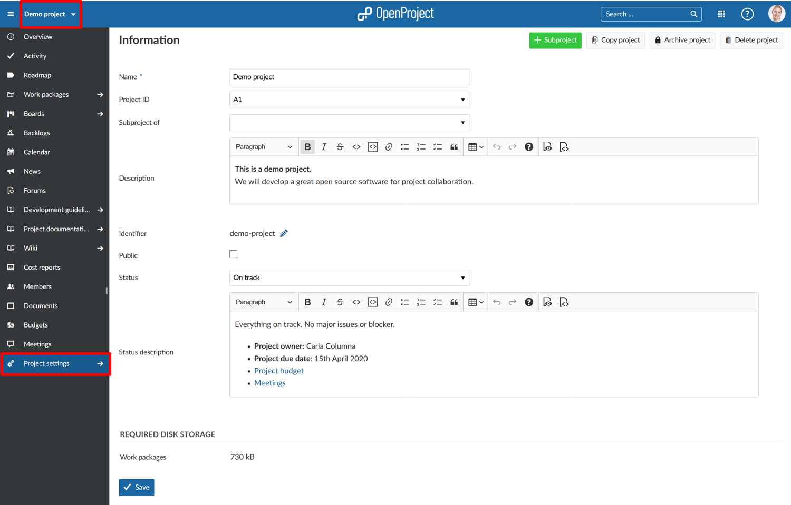

Customize your project in the project settings.
Open a project via the Select a project drop-down menu and navigate to -> Project settings in the project menu.

| Feature | Documentation for |
|---|---|
| Project information | Define project name, subproject, description, project status, and much more. |
| Modules | Activate or deactivate modules in a project. |
| Work package types | Activate or deactivate work package types in a project. |
| Work package categories | Create and manage work package categories. |
| Custom fields | Activate or deactivate custom fields for a project. |
| Versions | Create and manage versions in a project. |
| Repository | Activate and manage a SVN or GIT repository for a project. |
| Activities (time tracking) | Activate or deactivate Activities (for time tracking) in a project. |
| Backlogs settings | Manage backlogs settings for a project. |